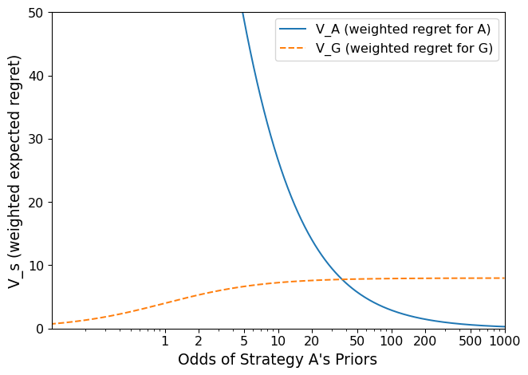

Lecture 06
October 13, 2025
This first section of slides draws extensively from Kwakkel, J.H., Haasnoot, M. (2019). Supporting DMDU: A Taxonomy of Approaches and Tools.
Coming to grips with irreducible uncertainty:
This entails:
The main idea for Multi-Scenario MORDM or Many-Objective Robust Optimization comes the observation that solutions found through optimization for a reference scenario can have very poor performance in other scenarios.

Bartholomew and Kwakkel (2020) recommend this approach as a good balance for identifying candidates that are optimal within scenarios, robust across scenarios, and not too computationally challenging to find.
Since the overarching aim of supporting decision making under deep uncertainty is the identification of robust strategies that offer an acceptable performance across multiple competing objectives, why not include these robustness considerations already in the search phase for candidate solutions?
Bartholomew and Kwakkel (2020)
But this approach is computationally intense and can sacrifice identifying strategies that are optimal in any given scenario!
Do not:
The uncomfortable truth is that the literature does not provide clear guidance on this question, and that’s probably a major reason you were all interested in taking this course.
As always, you can justify your choice with strong framing :)
And this is what the strong papers and analyses do. Reach out to someone whose work you admire!